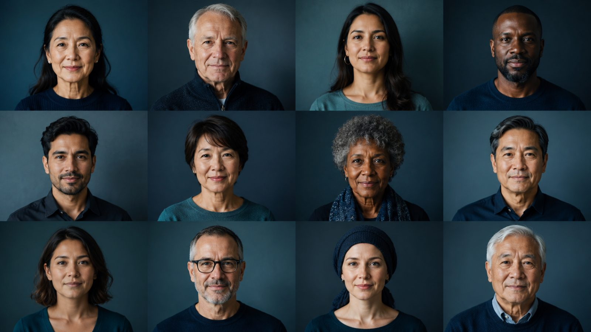

Outcomes across subgroups
VISION study · ≥3-year follow-up · overall response rate (ORR)

Overall response rate
51.8 %
95% CI 46.1, 57.4
Select a lens above to explore how consistent the response was.
ORR was consistent across every subgroup assessed
Overall ORR 51.8 % (95% CI 46.1, 57.4) held irrespective of the clinically relevant subgroups below.
Sex
Age
Smoking history
Histology
ECOG PS
Brain metastases
Consistent efficacy across therapy lines — particularly first-line.
1L first-line tepotinib57.9 % (95% CI 50.0, 65.6)
2L+ second-line or later45.0 % (95% CI 36.8, 53.3)
All treatment lines before tepotinib28.9 %
0%Overall 51.8 %100%
Asian patients · n = 106
56.6 %
ORR (95% CI 46.6, 66.2)
64.0 %ORR in first-line (1L) Asian patients95% CI 49.2, 77.1
✓Robust, durable long-term efficacy and a manageable safety profile
Asian patients showed robust, durable long-term efficacy — particularly in the first line.